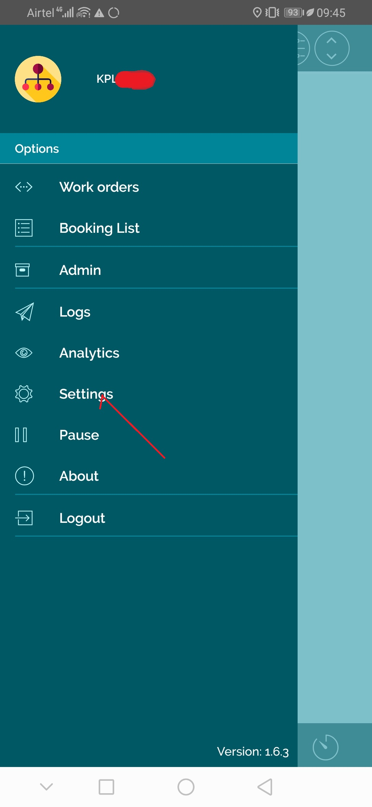
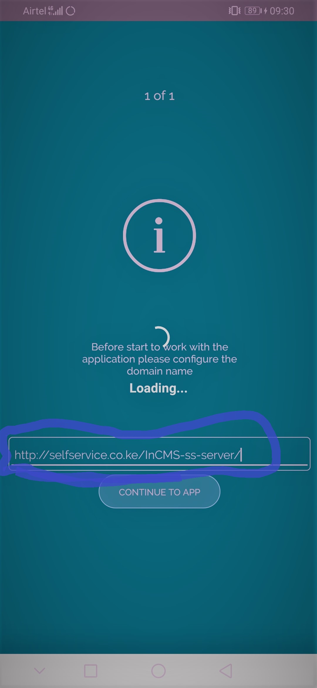
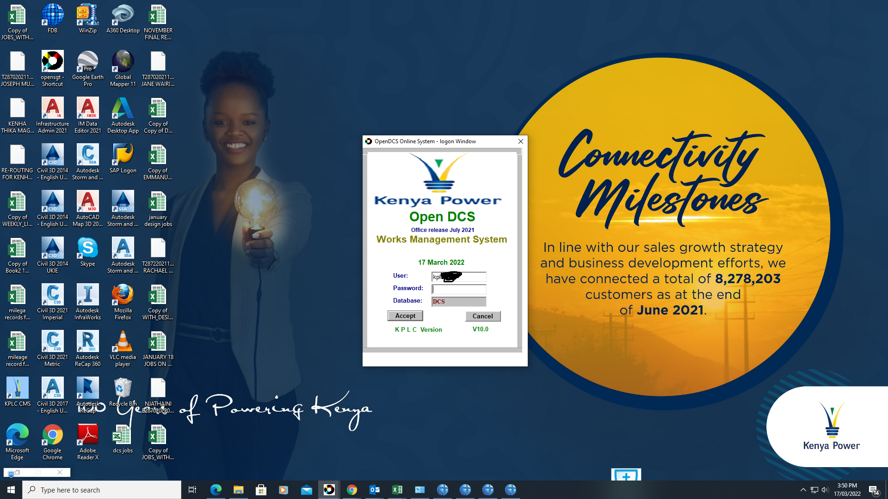
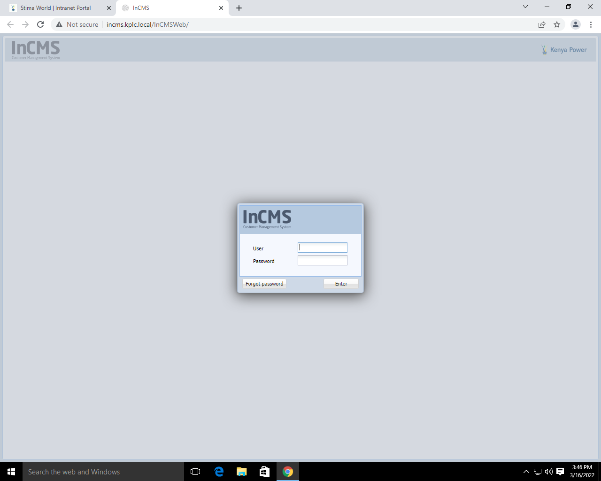
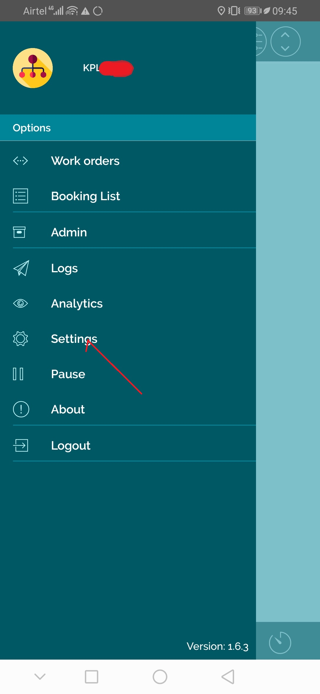
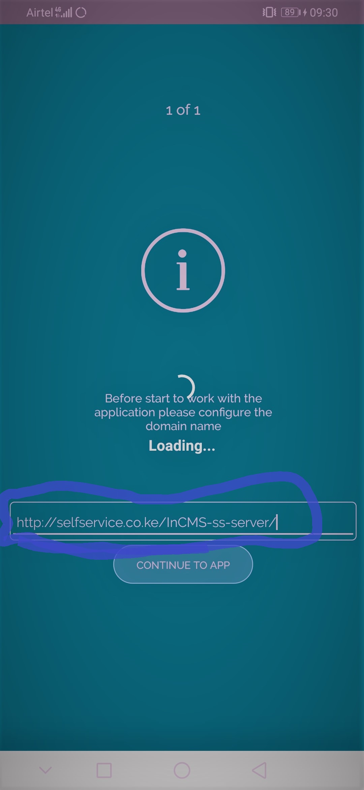

For self service go to work order setting change IP url-172.16.10.250 to-(selfservice.co.ke/InCMS-ss-server)


The Kenya Power and Lighting Company PLC (Kenya Power) owns and operates most of the electricity transmission and distribution system in the country and sells electricity to over 8 million as at end of June 2020.
The Company’s vision is to be Kenya’s energy solutions provider of choice by providing quality and reliable service to power people for better lives and enable the country’s socio-economic development in a sustainable manner.
Kenya Power’s key mandate is to plan for sufficient electricity generation and transmission capacity to meet demand; build and maintain the power distribution and transmission network and retail electricity to its customers.
The Government has a controlling stake at 50.1% of shareholding with private investors at 49.9%. Kenya Power is listed on the Nairobi Securities Exchange.
Powering people for better lives by innovatively securing business sustainability.
By striving to provide world-class products and services that delight our customers and transform lives as we ensure viability of our business.
Energy solutions provider of choice.
By becoming the preferred energy solution for businesses and individuals, we empower our customers to achieve more and reach their full potential
The Kenya Power & Lighting Plc. is committed to provide cost effective, reliable and quality power that delights customers and betters people’s lives.
In pursuit of this undertaking, suitable technologies and innovations shall be embraced to improve power network and customer service.
Quality objectives based on the Corporate Strategic plan shall be established at relevant functions, levels and processes within the organization.
The Board, Management and staff of Kenya Power are committed to effective implementation and continuous improvement of the Quality Management System that complies with ISO9001:2015 standard and other applicable requirements.
| Regions | County covered |
|---|---|
| Central rift | Nakuru Kericho, Bomet, Narok, Baringo, Nyandarua, Samburu |
| North rift | Uasin Gishu, Trans Nzoia, Elgeyo Marakwet, Nandi, West Pokot, Turkana |
| Mt.kenya | Nyeri, Muranga, Embu, Meru, Kirinyaga, Tharaka Nithi, Isiolo, Laikipia, Marsabit |
| North Eastern | Kiambu, Kitui, Garissa, Wajir, Mandera |
| Coast | Mombasa, Kilifi, Lamu, Kwale, Taita Taveta, Tana River |
| South Nyanza | Homa Bay, Migori, Kisii, Nyamira |
| Nairobi | Nairobi West Sub County, Nairobi North Sub County, Nairobi South Sub County, Machakos, Makueni & Kajiado |
| Western | Kisumu, Siaya, Vihiga, Kakamega, Bungoma, Busia |
Design is a process of creating the description of a new facility, usually represented by detailed plans and specifications;
construction planning is a process of identifying activities and resources required to make the design a physical reality.

InCMS provides a highly effective approach for enhancing the customer experience by streamlining and integrating all customer service processes.
CSM can be completely tailored to your organizations’ processes.
It is available as an on-demand, cloud-based offering that can literally be setup in few hours.

It is designed to be a response system, but it can be used to manage all stages of an incident.
It is created to give communities and organizations a common framework to communicate,
coordinate and collaborate during an incident response.
Program used for store keeping construction material and also store management of material , installation equipment and electric cables.
It provides end-to-end solutions for financials, manufacturing, logistics, distribution, etc.
All business processes are executed in one SAP system and sharing common information with everyone.
check the image below:
.png)
The Transport Management System (TMS) is a system that manages transportation operations and may be part of an enterprise resource planning system.
This software solution helps you to keep the operational costs to the bare minimum and optimize the level of service provided.
Ip address incms->http://172.16.10.250/InCMS-ss-server/
For self service go to work order setting change IP url-172.16.10.250 to-(selfservice.co.ke/InCMS-ss-server)


Go to Settings->network&internet->mobile network->roaming->access point names:
Used for digitilization of contracted power supply.
.png)

Employee welfare means anything done for the comfort and (intellectual or social) improvement of the employees, over and above the wages paid.
In simple words, it means “the efforts to make life worth living for workmen.”
It includes various services, facilities and amenities provided to employees for their betterment.
Outlook configure via personal phone;